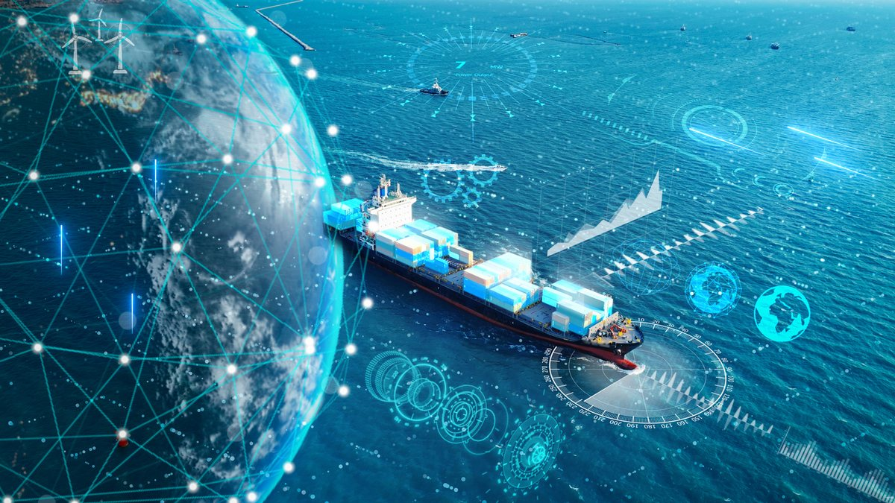

The Hidden Logistics Gap Between AI Insights and Operational Execution
How AI, operational intelligence, and orchestrated execution are transforming modern supply chains.
For more than a decade, digital transformation in transportation and logistics has been driven by one primary objective: visibility.
Organizations invested heavily in Transportation Management Systems (TMS), Warehouse Management Systems (WMS), telematics, IoT sensors, GPS tracking, and advanced analytics to create a continuous view of their operations. Today, most logistics organizations can monitor shipments across continents, track fleet performance continuously, measure warehouse productivity, and receive instant alerts when disruptions occur.
Yet despite unprecedented visibility, many organizations continue to face familiar challenges. Transportation costs remain volatile. Customer expectations continue to rise. Supply chain disruptions have become more frequent and unpredictable. Labour shortages, geopolitical uncertainty, changing trade regulations, and weather-related events introduce new operational risks almost daily.
The issue is no longer a lack of information. It is the growing gap between knowing what is happening and orchestrating the right response quickly enough to create business value.
This is the logistics intelligence gap.
Why Supply Chain Visibility Is No Longer Enough
Visibility was an essential first step in digital transformation, but visibility alone does not improve business outcomes.
A dashboard can identify that a shipment has been delayed, but it does not determine which customers should be prioritized, how production schedules should be adjusted, whether alternative transportation capacity is available, or how commercial commitments will be affected.
Similarly, an alert may identify congestion at a major port, but it does not automatically orchestrate procurement, warehouse operations, customer service, finance, and transportation planners to respond as one organization.
Instead, many companies still rely on lengthy email chains, spreadsheets, phone calls, and meetings to align stakeholders before decisions can be executed. By the time everyone agrees on the appropriate course of action, the operating environment has often changed again.
In today's logistics environment, the speed of decision-making has become just as important as the speed of moving goods. Organizations that consistently outperform competitors are not simply collecting more operational data. They are making better decisions faster by orchestrating execution across the enterprise.
AI Is Transforming Logistics, But It Is Also Creating New Challenges
Artificial intelligence is rapidly becoming a strategic capability across transportation and supply chain operations. Organizations are deploying AI to improve demand forecasting, optimize routing, predict equipment failures, automate administrative processes, identify capacity constraints, reduce transportation costs, and uncover operational inefficiencies that were previously undetectable.
These technologies deliver significant value. However, many organizations are discovering that deploying AI creates an entirely new challenge. AI generates more intelligence than ever before, but intelligence alone does not create orchestrated action.
One AI model may recommend rerouting shipments around severe weather. Another may identify declining fleet performance. A forecasting model may recommend repositioning inventory. Procurement systems may identify supplier risks while customer service platforms detect changing customer priorities.
Each recommendation may be individually valuable. Collectively, however, they often remain disconnected. Without a way to bring together information, context, workflows, and decision-makers, organizations simply replace one operational bottleneck with another.
The challenge has shifted from generating insights to orchestrating execution.
From Visibility to Operational Intelligence
Leading logistics organizations are beginning to move beyond traditional visibility platforms toward operational intelligence. Operational intelligence is not another reporting dashboard or another analytics application.
It is the ability to continuously connect operational data, enterprise systems, AI-generated insights, institutional knowledge, and human expertise into a single decision environment that enables organizations to respond with speed, consistency, and confidence.
Rather than asking teams to interpret dozens of disconnected systems, operational intelligence provides a common operational picture that aligns information across transportation, warehousing, procurement, finance, customer operations, and executive leadership. This allows organizations to:
- Respond to disruptions more quickly
- Improve cross-functional orchestration
- Reduce manual decision-making
- Increase supply chain resilience
- Make faster, more consistent, and explainable decisions
The competitive advantage is no longer created by having more dashboards. It is created by enabling the organization to act as one orchestrated enterprise.
Human-in-the-Loop AI Creates Better Logistics Decisions
The future of logistics will not be fully autonomous. While AI can optimize routes, forecast demand, identify capacity constraints, and recommend operational improvements, experienced logistics professionals remain essential for interpreting context, balancing commercial priorities, and making decisions during rapidly changing situations.
Every logistics network operates within unique customer commitments, contractual obligations, regional regulations, operational constraints, and institutional knowledge that cannot be fully captured by algorithms alone.
This is why Human-in-the-Loop AI is becoming increasingly important. Rather than replacing operational expertise, it augments it. By combining machine intelligence with human judgment, organizations improve decision quality, increase transparency, reduce operational risk, and build greater confidence in AI-assisted recommendations.
The result is not autonomous decision-making. It is better decision-making.
Why Operational Intelligence Is Becoming the Next Competitive Advantage
The logistics industry is entering a new phase of digital transformation. Success will no longer be determined solely by fleet size, warehouse capacity, or the volume of operational data collected.
Instead, competitive advantage will increasingly come from an organization's ability to continuously sense change, understand its implications, align stakeholders, and orchestrate execution faster than competitors.
Organizations that successfully connect people, processes, enterprise systems, and AI into a unified operating model will be better positioned to improve service levels, reduce costs, strengthen resilience, and respond confidently to an increasingly dynamic global supply chain. Operational intelligence represents the next evolution of enterprise logistics.
Where TwoSuns.ai Fits
Most logistics organizations do not need another dashboard. They do not need another disconnected AI application. They need an operational intelligence layer that connects their existing technology investments.
TwoSuns.ai is designed to provide that layer. Rather than replacing existing Transportation Management Systems, Warehouse Management Systems, ERP platforms, telematics, or AI applications, TwoSuns.ai connects operational data, workflows, institutional knowledge, market intelligence, and AI-generated insights into a persistent decision environment.
It enables transportation, operations, procurement, finance, customer service, and executive teams to work from a shared operational picture, understand the implications of changing conditions, and orchestrate action more quickly and with greater confidence.
By transforming fragmented information into orchestrated execution, TwoSuns.ai helps organizations move beyond visibility toward operational intelligence, where AI recommendations become explainable decisions and decisions become measurable business outcomes.
Key Takeaways
- Visibility is no longer enough to manage today's complex supply chains.
- AI generates valuable insights but does not automatically orchestrate execution.
- Operational intelligence connects enterprise systems, AI, people, and workflows into a unified decision environment.
- Human-in-the-loop AI improves transparency, consistency, and operational confidence.
- Organizations that master orchestrated execution will define the next generation of logistics leadership.
- TwoSuns.ai provides the operational intelligence layer that transforms fragmented information into intelligent execution across the enterprise.
Frequently Asked Questions
It is the growing distance between knowing what is happening across a supply chain and orchestrating the right response fast enough to create value. Most organizations now have deep visibility, but visibility alone does not align teams or drive execution.
A dashboard can show a delay or a port congestion, but it does not decide which customers to prioritize, adjust production, find alternative capacity, or align procurement, warehousing, finance, and transportation to act as one. Visibility tells you what happened; it does not orchestrate the response.
Operational intelligence continuously connects operational data, enterprise systems, AI insights, institutional knowledge, and human expertise into a single decision environment, so teams share a common operational picture and can respond with speed, consistency, and confidence.
It keeps experienced logistics professionals at the center of the decision. AI optimizes routes, forecasts demand, and surfaces risks, but people interpret context, balance commercial priorities, and make the call, improving decision quality, transparency, and confidence.